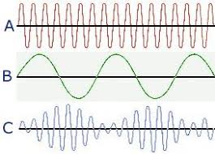
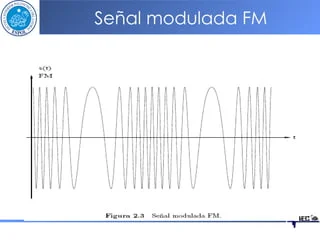
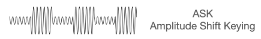
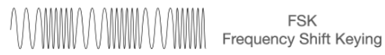
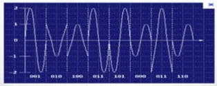
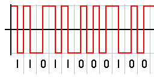

Modulación
Técnicas de modulación analógica
■Modulación AM: La amplitud de la onda portadora varía proporcionalmente a la señal de información que se desea transmitir. Este método es ampliamente utilizado en transmisiones de radio, especialmente en las bandas AM, aunque es más susceptible al ruido en comparación con otras técnicas.
■Modulación FM: consiste en variar la frecuencia de la onda portadora de acuerdo con la señal de entrada. Este tipo de modulación es conocido por su mejor calidad de sonido y resistencia al ruido.
Técnicas de modulación digital
■La modulación por desplazamiento de amplitud (ASK): Es donde la amplitud de la señal portadora cambia entre niveles específicos para representar datos digitales, como los 0 y 1 binarios.
■La modulación por desplazamiento de frecuencia (FSK): Utiliza frecuencias diferentes para representar los bits
■La modulación por desplazamiento de fase (PSK): En la que la fase de la portadora se altera según los datos transmitidos. PSK es una opción popular en sistemas digitales debido a su eficiencia en el uso del espectro.
■La modulación de amplitud en cuadratura (QAM): Combina cambios en amplitud y fase para transmitir múltiples bits simultáneamente, lo que maximiza la capacidad de datos en sistemas modernos como LTE y Wi-Fi.
Conversación Analógico-Digital
Esto se logra mediante tres pasos principales: muestreo, cuantización y codificación.
El muestreo implica tomar valores discretos de la señal analógica en intervalos regulares, lo que convierte una señal continua en una serie de puntos discretos.
Luego, la cuantización asigna cada punto a un nivel predefinido, redondeando los valores originales al nivel más cercano. Finalmente, la codificación transforma estos niveles en códigos binarios que pueden ser procesados por sistemas digitales.
Códigos de línea
Son técnicas de codificación utilizadas para preparar señales digitales para su transmisión. El código RZ (Return to Zero) representa un nivel lógico con una transición a un estado de referencia, mientras que NRZ (Non-Return to Zero) mantiene los niveles constantes sin transiciones intermedias. NRZ-L (Non-Return to Zero-Level) agrega la variación de niveles para distinguir entre los bits. El código AMI es conocido por su capacidad de detección de errores, ya que invierte la polaridad de las marcas (1s) consecutivas.
Módem, estándares y protocolos
Los módems son dispositivos que convierten señales digitales en analógicas (y viceversa) para su transmisión a través de medios.
Este proceso, conocido como modulación y demodulación, es fundamental en sistemas de comunicación tradicionales y modernas.
Los estándares y protocolos juegan un papel clave en garantizar la interoperabilidad entre diferentes dispositivos y sistemas.
Por ejemplo, protocolos como TCP/IP establecen las reglas para la transferencia de datos en redes como Internet, mientras que los estándares internaciona.